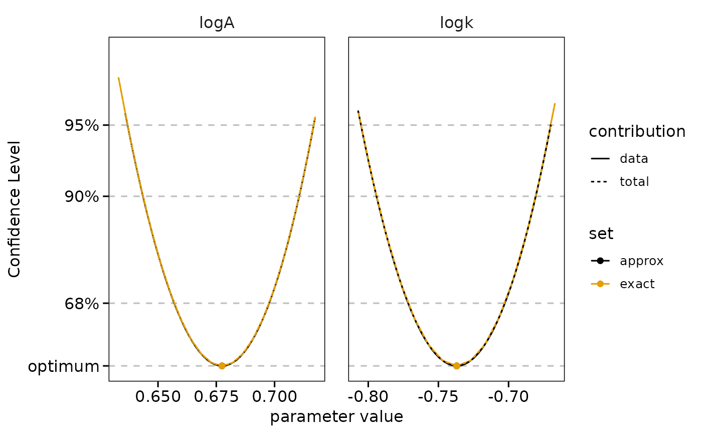
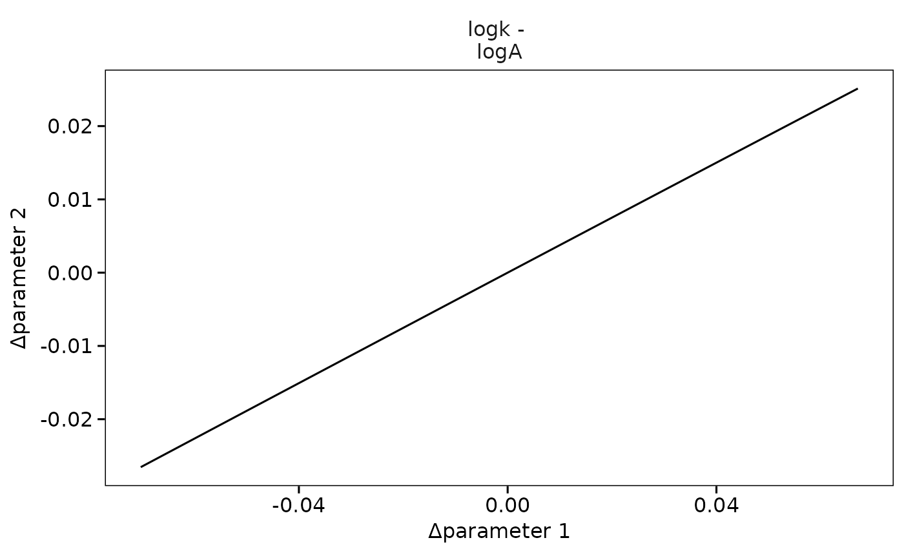

Computes the profile likelihood of one or more parameters around an
optimum. method = "integrate" follows the profile path by Euler steps of
the path equation of the Lagrangian; method = "optimize" re-optimizes the
other parameters at every step. A method of stats::profile() for dMod
objective functions and plain R functions.
Usage
# S3 method for class 'objfn'
profile(
fitted,
pars,
whichPar,
alpha = 0.05,
limits = c(lower = -Inf, upper = Inf),
method = c("integrate", "optimize"),
stepControl = NULL,
algoControl = NULL,
optControl = NULL,
verbose = FALSE,
cores = 1,
cautiousMode = FALSE,
side = c("both", "left", "right"),
delta = NULL,
sparse = "auto",
...
)
# S3 method for class '`function`'
profile(fitted, ...)Arguments
- fitted
Objective function
fitted(pars, fixed, ...)returning a list withvalue,gradientandhessian. Numeric attributes of the result, such as"data"and"prior", are kept as columns of the profile, exceptchi2andchi2_*.- pars
Named numeric parameter vector at the optimum.
- whichPar
Numeric or character vector, the parameters to profile.
- alpha
Significance level; the profile stops where the objective has risen by
qchisq(1 - alpha, 1). Default0.05.- limits
Numeric of length 2, the lower and upper deviation from
pars[whichPar]at which a profile stops. Defaultc(lower = -Inf, upper = Inf).- method
"integrate"(default) or"optimize". Selects the defaults ofstepControl,algoControlandoptControl.- stepControl
List of step-size settings, merged into the defaults. Defaults are given as
"integrate"/"optimize".stepsizeInitial step in the profiled parameter.
1e-4/1e-2.min,maxBounds on the step size.
1e-4andInffor both methods.atolThe step shrinks by a factor 1.5 when actual and predicted change of the objective differ by more than
atol.1e-2/1e-1.rtolThe step doubles when the difference is below
0.3 * atol, or below0.3 * rtolrelative to the actual change.1e-2/1e-1.limitMaximum number of steps per side.
500/100.stopComponent of the objective whose rise is compared with
delta:"value"or the name of a numeric attribute such as"data"."value"for both methods.
- algoControl
List of path settings, merged into the defaults. Defaults are given as
"integrate"/"optimize".gammaInitial factor of the correction toward the optimum of the other parameters.
1/0.WMatrix in the path equation,
"hessian"or"identity"."hessian"is the exact Hessian wherefittedreturns one withderiv2 = TRUE, as a model built with second derivatives does, otherwise the onefittedreturns, fornormL2()the Gauss-Newton matrix;deriv2 = FALSEin...keeps that one. With"identity"a step moves the profiled parameter alone and the others are reoptimized at every step."hessian"/"identity".reoptimizeWhether every step is followed by a fit of the other parameters with
trust().FALSE/TRUE.correctionRelative correction above which
gammais halved; below half of itgammadoubles up to the initial value.1for both methods.regWhere the Hessian bordered by the constraint is numerically singular, the path equation is solved by a pseudoinverse without the singular values below
regtimes the largest one and the matrix dimension..Machine$double.eps/0.
- optControl
List of arguments for
trust()in the re-optimization, merged intolist(rinit = 0.1, rmax = 10, iterlim = 10)for"integrate"andlist(rinit = 0.1, rmax = 10, iterlim = 100)for"optimize". Any other argument oftrust()can be added.- verbose
Logical, print progress. Default
FALSE.- cores
Number of parallel workers over parameters, or
c(pars = , conditions = )to also give each worker a condition axis, which selects a PSOCK backend. Keep the product with the threads of each objective evaluation below the number of cores. Default1.- cautiousMode
Logical. If
TRUE, every step is written toprofiles-interRes/<parameter>-<side>.Rin the working directory, and the files are kept. DefaultFALSE.- side
"both"(default),"left"or"right", the side of the optimum to profile.- delta
Rise in the objective at which a profile stops. Default
NULL, which usesqchisq(1 - alpha, 1). PassprofileThreshold()with the arguments later given toconfint.parframe(), so the profile reaches that threshold.- sparse
"auto"(default),TRUEorFALSE: the path equation and the reoptimizations on the sparse Hessian offitted, chosen atparsas intrust().hessian = "sparse"in...isTRUE.- ...
Further arguments passed to
fitted, for examplefixed.
Value
A parframe() with one row per profile point of all profiled
parameters, with metanames value (the objective), constraint
(deviation of the profiled parameter from the value in pars),
stepsize, gamma and whichPar (the profiled
parameter), columns for the numeric attributes of the objective other
than chi2 and chi2_*, and one column per parameter.
Profiles that fail are dropped with a message; when all fail,
profile() stops with an error. The
attribute "ends" is a data frame with one row per side and the
columns whichPar, side, steps and reason:
"threshold", "limit", "step limit" or the error of
the objective that ended the side.
See also
confint.parframe() for confidence intervals, plotProfile() and
plotPaths() for plots, profileThreshold(); the guide chapters
Profile likelihood,
Prediction uncertainty
and Remote computing, which explains cores.
Examples
# \donttest{
old <- options(dMod2.outdir = tempdir())
## Decay model, observation and parameter transformation, compiled together
f <- addReaction(eqnlist(), from = "A", to = "", rate = "k*A")
x <- Xs(odemodel(f, modelname = "profile_x", compile = FALSE))
g <- Y(c(y = "A"), f = x, attachInput = FALSE, modelname = "profile_g",
compile = FALSE)
p <- P(eqnvec(A = "exp(logA)", k = "exp(logk)"), condition = "C1",
modelname = "profile_p", compile = FALSE)
compile(x, g, p, output = "profile_example", cores = 1)
#> using C++ compiler: g++
#> every source : -O2 -DNDEBUG -w -fPIC
#> 2 of 4 also : -fopenmp
## Data, objective and fit
set.seed(1)
times <- seq(0, 5, by = 0.5)
data <- datalist(C1 = data.frame(
name = "y", time = times, sigma = 0.05,
value = 2 * exp(-0.5 * times) + rnorm(length(times), sd = 0.05)))
obj <- normL2(data, g * x * p)
myfit <- trust(obj, c(logA = 0, logk = 0), rinit = 1, rmax = 10)
## Profiles by integration and by repeated optimization
profiles.approx <- profile(obj, myfit$argument, whichPar = c("logA", "logk"))
profiles.exact <- profile(obj, myfit$argument, whichPar = c("logA", "logk"),
method = "optimize")
## Plots and confidence intervals
plotProfile(list(approx = profiles.approx, exact = profiles.exact))

plotPaths(profiles.approx, whichPar = "logk")

confint(profiles.approx, val.column = "value")
#> name value lower upper
#> logA logA 0.6774738 0.6369418 0.7167919
#> logk logk -0.7369431 -0.8051821 -0.6699116
options(old)
# }